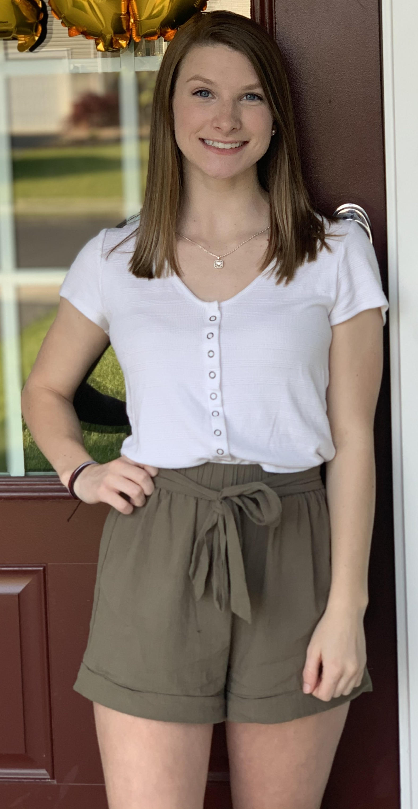

Alli Bodenschatz
127 Hayvenhurst Court
Stephens City, VA 22655
My Portfolio

LinkdIn
Education
Sherando High School
Stephens City, VA
August 2016-May 2020
Laurel Ridge Community College
Middletown, VA
August 2018-May 2020
Completed Public Speaking class and Psychology class along with Dual Enrollment Courses
James Madison University
Harrisonburg, VA
August 2020-Expected May 2024
Bachelor of Science in Media Arts and Design
General Business Minor
Cumulative GPA: 3.36
Deans List: Fall 2020, Spring 2020, Spring 2022
Experience
Frederick County Parks and Recreation
Marketing Intern
Winchester, VA
May 2022-August 2022
- Created advertisements for upcoming events
- Created Facebook events for upcoming events
- Collaborated with other interns on group projects
Bear Chase Brewing Company
Marketing Intern
Bluemont, VA
May 2022-August 2022
- Captured content of customers at the facility
- Created private event contracts for customers
- Created guides for rental properties
Portfolio Recovery Associates
Disputes Intern
Virginia Beach, VA
May 2021-July 2022
- Scan documents into accounts
- File open disputes based on the reason for the dispute
- Closed expired accounts that are past due
Martins Grocery Store
Shopping Assistant
Stephens City, VA
June 2019-August 2020
- Filled grocery orders for online customers
- Used technology to find product on shelf
- Attention to detail in filling order accurately
Activites
Phi Sigma Sigma
Iota Chi Chapter, James Madison University
September 2021-Present
Active Member
- Attend weekly chapter meetings
- Participates in philanthropy events
Skills
- Proficient in Microsoft Word
- CSS Essential Training
- HTML Essential Training
- World Press Essentail Training